Gallery
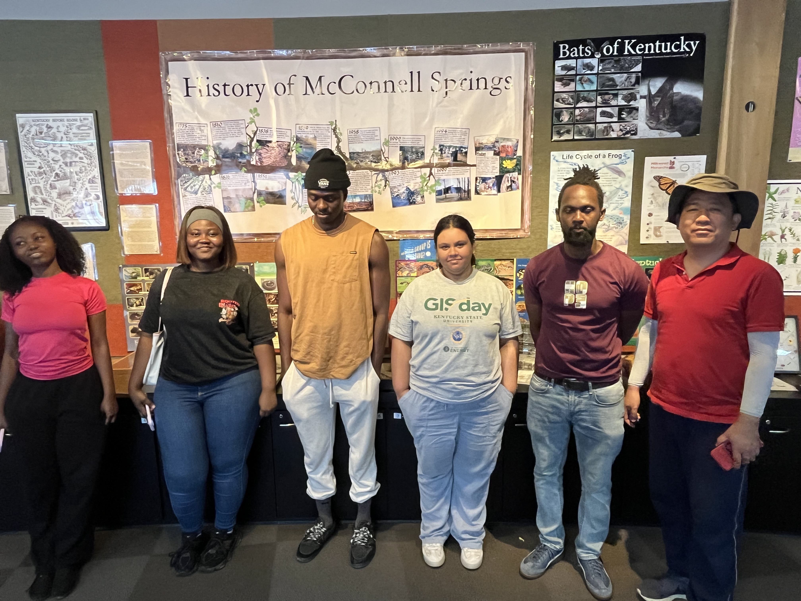

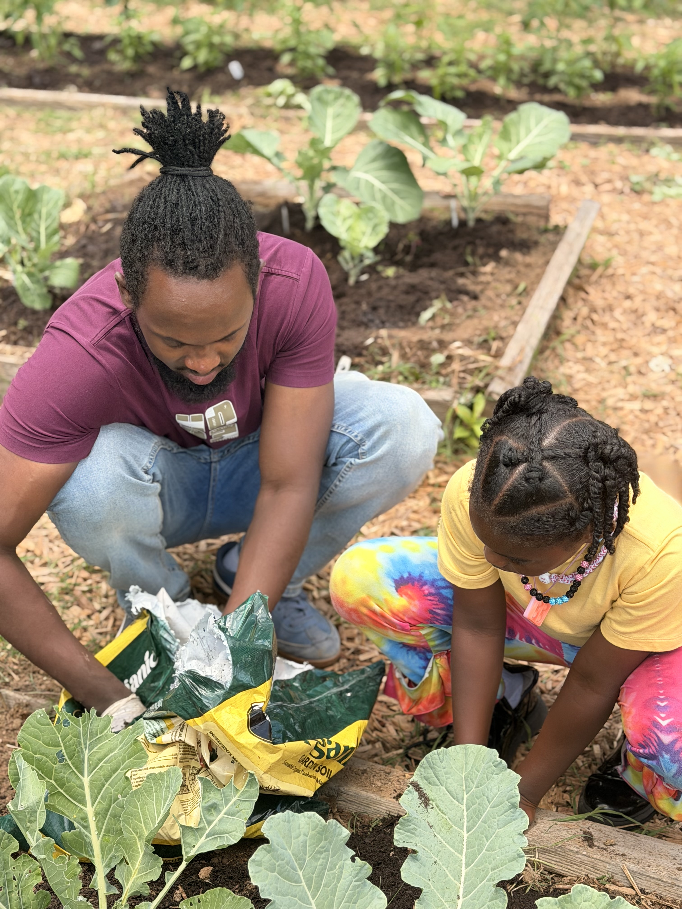
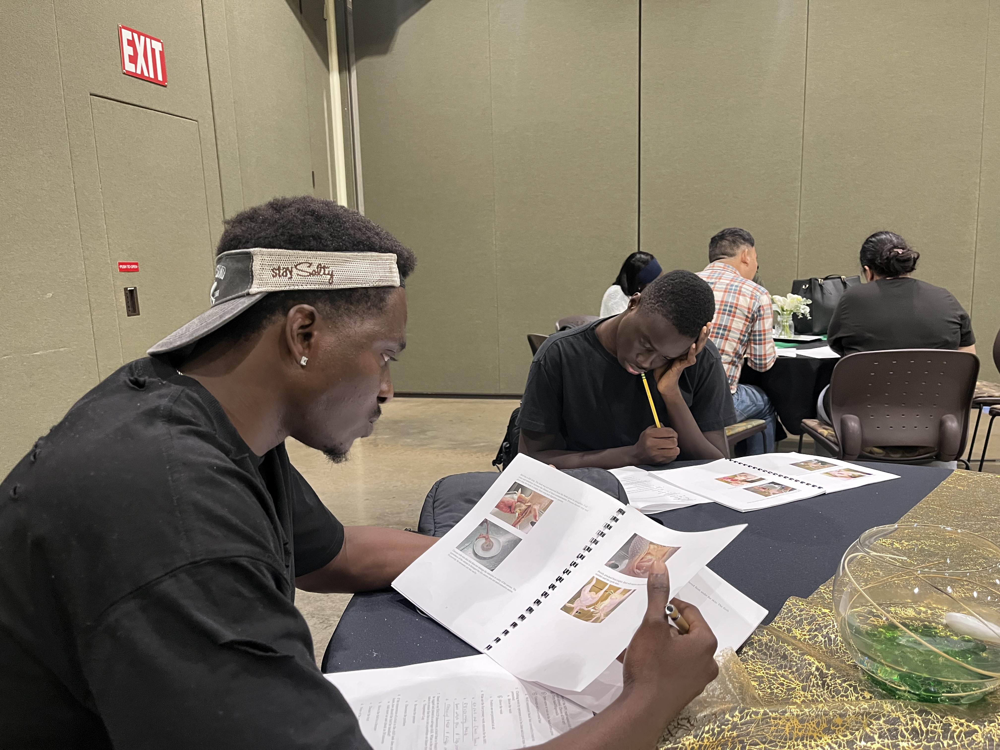
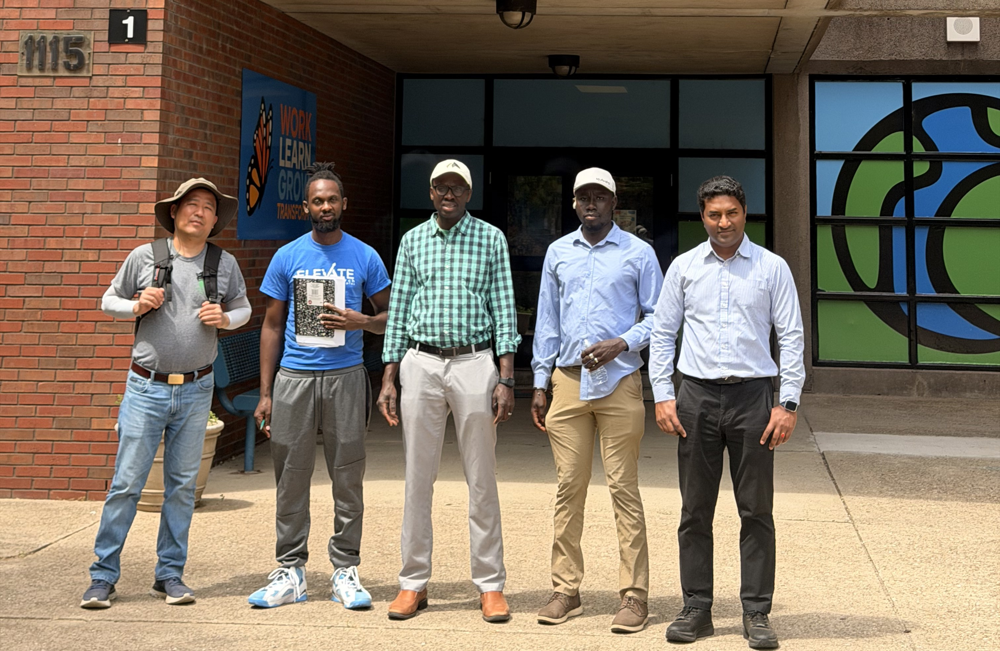
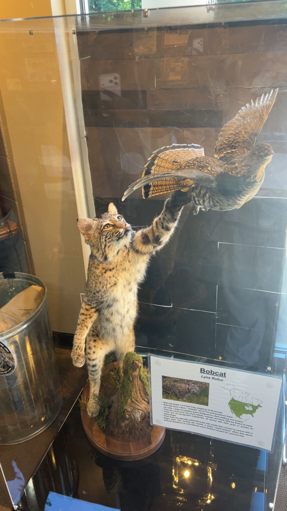
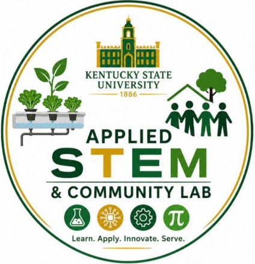
Applied Stem and Community Lab
Learn. Apply.
Innovate. Serve
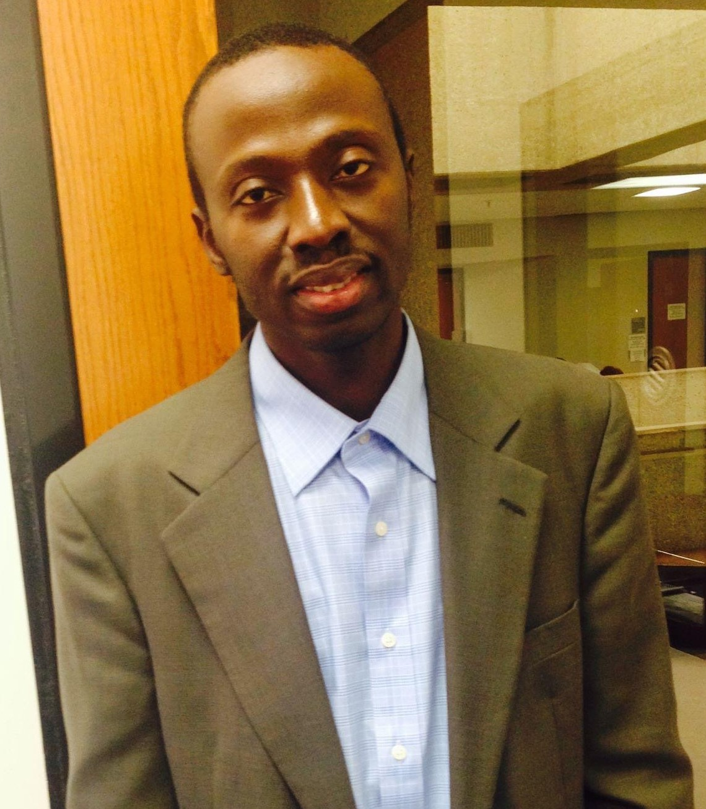
Dr. Sait Sarr received his Bachelor of Science degree in Agriculture, Food, and the Environment, a Master of Science degree in Environmental Studies, and a Master of Business Administration degree, all from Kentucky State University (KSU) in Frankfort, KY. His master's thesis focused on sustainable agricultural practices that are both beneficial to farmers while protecting the environment. He earned his Doctoral degree from the University of Louisville with a focus on Urban Sustainability. He is currently a Senior Research Scientist and Adjunct Faculty in the College of Agriculture, health, and Natural Resources and the College of Business, Engineering, and Technology at Kentucky State University teaching courses in Agriculture, Food, Environment, Business, Management, and Economics. He has published articles in different journals and made several paper presentations at professional conferences. His research interests include urban farming, pollution management, community sustainability and development, the development and effectiveness of environmental and energy policies, environmental justice, and poverty eradication. He is currently the Principal Investigator of a United States Department of Agriculture-National Institute of Food and Agriculture Capacity Building Grant (USDA Award # 2025-38821-45463) providing knowledge and skills to K-12 school youths, KSU students, faculty, and staff, local growers, and other stakeholders in innovative local food production systems and marketing strategies.
To provide hands-on STEM education and innovation opportunities that empower students and community members with practical skills to solve real-world problems, foster enterpreneurship and create positive community impact.






Farouq says,"Honestly, when I first joined this project, I did not fully know what to expect. But looking back at everything we have done so far, I can say this has been one of the most hands on and eye opening experiences I have had as a student.My overall experience from this project has been genuinely rewarding. I came into this as a communication major who honestly had no idea what agriculture really looked like up close or what it truly entails. I did not grow up thinking about soil preparation or raised bed systems or community gardens. But the thing is, the more I show up and do the work, the more I am starting to love it. I love the process, I love what we are building, and I love what this project stands for. It is bigger than just planting vegetables. It is about empowering communities, feeding people, and giving students like me a chance to be part of something that actually matters."
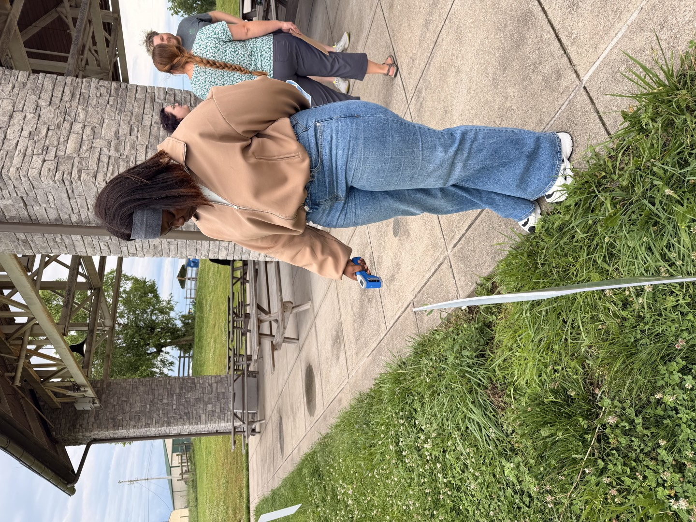
Salamatu says,"I am a nursing student, and my background is more about caring for people, not working on a farm. Because of that, I thought this whole experience would be difficult for me to understand and do. But to my surprise everything is going so smoothly. I have learned a whole lot of things that I never expected I could do. I never thought I would be able to kill a hen remove the parts and process it, but I did it.This project has significantly broadened my perspective on the vital role of agricultural research and university extension programs. Moving from theoretical knowledge to active participation in the greenhouse at Tates creek middle school and community victory gardens and processing labs has given me a deep appreciation for the precision, science, and labor involved in sustainable food production. Furthermore, working as part of a research team has reinforced the importance of professional collaboration and community outreach. This rewarding experience pushed me out of my comfort zone, taught me invaluable skills in both plant and animal sciences, and showed how closely these disciplines change community well being."
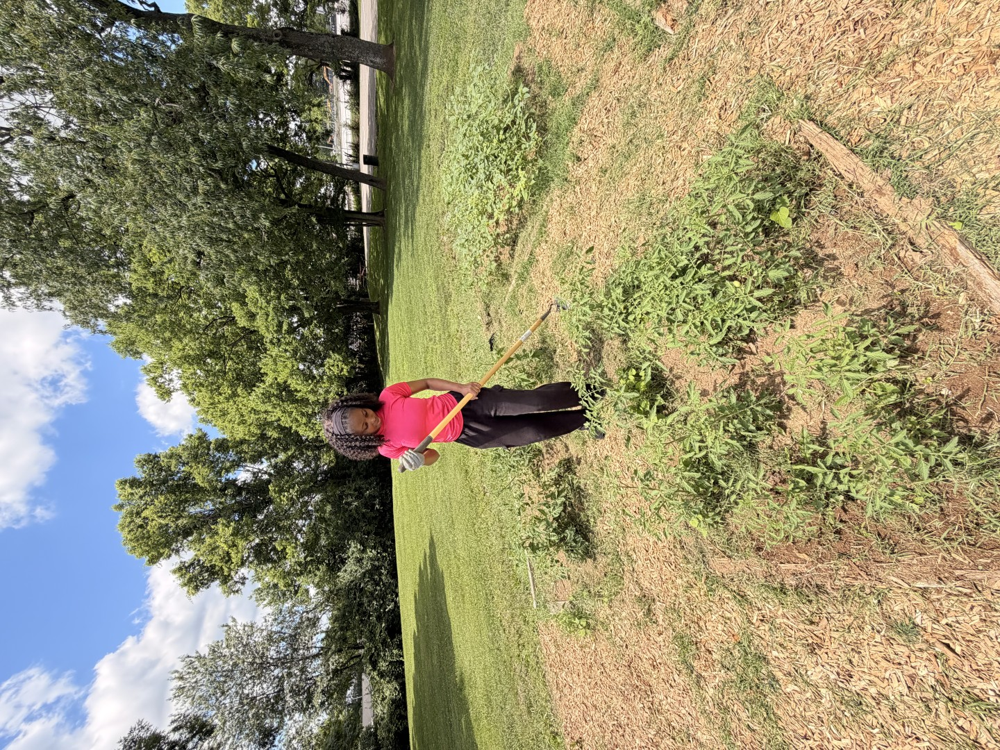
Joycelyn says,"In community-based research, the environment is dynamic and unpredictable. Our team had to remain highly adaptable, constantly adjusting our plans to account for sudden weather shifts, equipment availability, and the schedules of the community members we were working alongside. We learned that meaningful community research requires active, sustained engagement. It is not about observing from a distance; it is about contributing physical labor to ongoing community efforts and building mutual trust with the people connected to those spaces. We walked away with more than just practical farming skills; we gained a clear view of how local food systems intersect with broader community development, public health, and education. This experience ultimately strengthened our team’s ability to work across disciplines, think flexibly on our feet, and execute meaningful, applied research in real world settings"
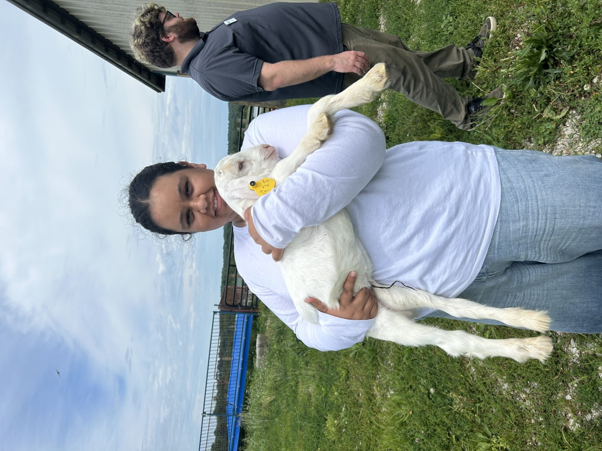
Pranjalee says,"Working under Dr. Sait Sarr as a research assistant has been one of the most unique and educational experiences I have had. Under this project, I have visited several agricultural sites, participated in various community activities and even attended conferences. These experiences have helped me develop my practical skills as well as my knowledge on agriculture, food production and community engagement.gardening, community outreach, and poultry processing. Coming from a non-agricultural background, many of these experiences were completely new to me. Despite that, I have genuinely enjoyed learning about agriculture and seeing how technology, research, and community engagement can work together. This experience has helped me step outside of my comfort zone, learn new skills, and gain a deeper appreciation for fields that are different from my own area of study."
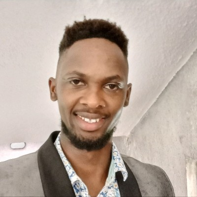
Eric Murwanashyaka is a Research and Extension Associate at Kentucky State University with a passion for sustainable agriculture, urban food systems, digital agriculture, and community education. Originally from Rwanda, he earned a bachelor’s degree in Agronomy from EARTH University in Costa Rica and later completed a master’s degree in environmental studies with a specialization in Controlled Environment Agriculture at Kentucky State University. His experience spans hydroponics systems, soil science research, sustainable food production, agricultural education, and community outreach. In addition to his agricultural background, Eric has developed skills in DevOps, cloud computing, Linux systems, and digital agriculture technologies, with a particular interest in integrating data-driven tools and automation into food production systems. He works with youth and communities in Kentucky to establish community gardens and hydroponic systems, teaching practical skills that improve food security, promote local food production, and build healthier, more resilient communities.
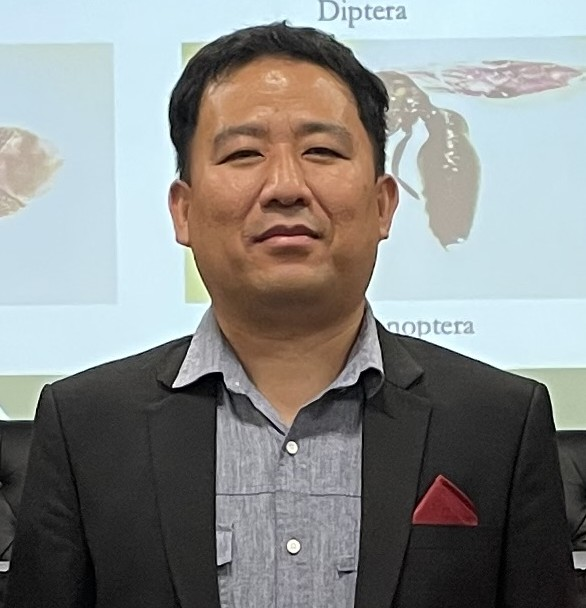
Subas Thapa Magar is a Research and Extension Assistant for the USDA-funded project, “Enhancing Urban Agricultural Research, Education, and Extension Opportunities for Students and Staff of Kentucky State University.” His work focuses on sustainable agriculture research, field demonstrations, and extension programming. He supports vegetable production through raised bed construction, soil preparation, irrigation, hydroponic system installation, greenhouse setup, and sustainable crop management. He also collaborates with community members and middle and high school students to establish and maintain community and school gardens while providing hands-on training in sustainable vegetable production. He contributes to advancing local food production, food security, and community engagement through research, education and outreach.
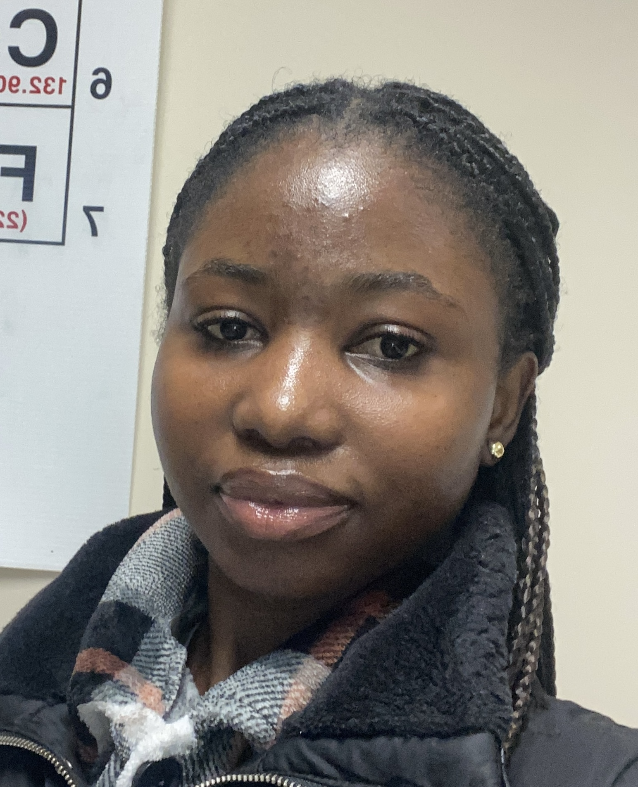
Joycelyn Konney is a Nursing student at Kentucky State University. She is passionate about healthcare and helping others. Her goal is to become a nurse and make a positive difference in people’s lives. As a student, she is working hard to build her knowledge and skills through her coursework and by gaining hands-on experiences. She has also participated in undergraduate research and community projects, which have helped her develop teamwork, communication, and leadership skills.
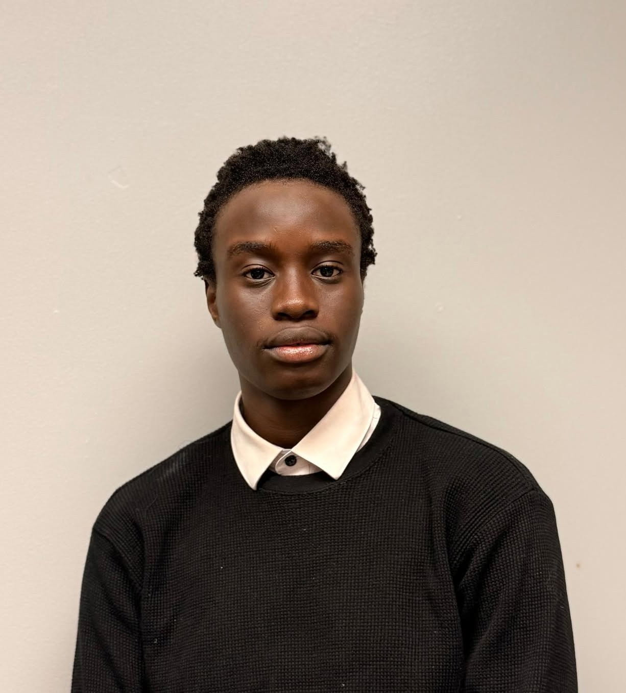
Sulayman Touray is a Nursing student at Kentucky State University and an international student from Gambia. He is passionate about healthcare, education, and community service. His goal is to become a Family Nurse Practitioner and use his skills to improve access to quality healthcare in underserved communities. Through his studies and campus involvement, he wants to continue to develop leadership, communication, and teamwork skills while preparing for a career dedicated to helping others. He is committed to academic excellence, personal growth, and making a positive impact both in the United States and in Gambia.
Farouq Ogunbanwo is an undergraduate student majoring in Communication at Kentucky State University, where he also serves as a Research Assistant on a USDA-NIFA funded community agriculture initiative. Under the supervision of Dr. Sait Sarr, his work spans site visits to community gardens, school greenhouse programs, and agricultural partner organizations across Kentucky bridging the gap between academic research and real-world community impact. In addition to his research role, Farouq has been an active participant in KYSU’s GEO-STEM program, contributing to outreach efforts that connect students and communities with science, technology, and environmental education. His academic background in Communication informs his approach to research emphasizing clear storytelling, community engagement, and the power of meaningful connection.
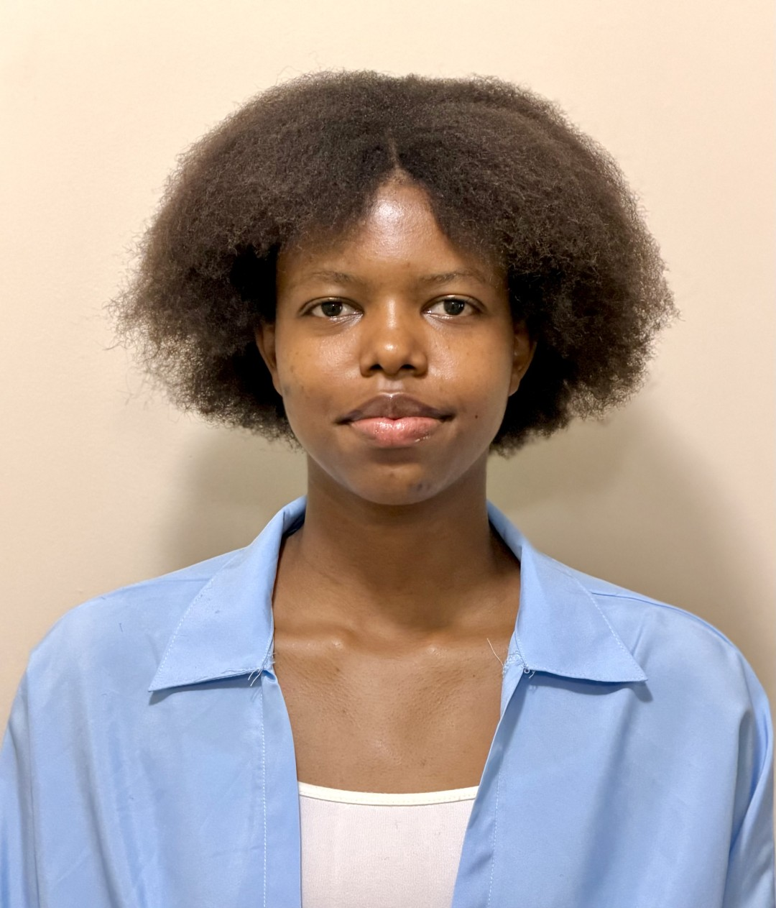
Pauline Iradukunda is an undergraduate student majoring in computer science at Kentucky State University and currently serving as a research assistant on the USDA-NIFA funded community initiative under the supervision of Dr. Sait Sarr. She is passionate about leveraging technology to create innovative solutions. She participates in different projects including school greenhouse programs and agricultural organizations across Kentucky where she learns hands-on activities and community engagement, among others.
Pranjalee Dahal is an undergraduate Computer Science student at Kentucky State University with a strong passion for software development, artificial intelligence, and web technologies. She is interested in exploring innovative ideas and applying her technical skills to solve real-world challenges through creative and practical solutions. Serving as a research assistant under Dr. Sarr, she collaborates on research projects, contributes to the development of digital tools, and support initiatives that promote innovation, interdisciplinary collaboration, and community engagement. Through these experiences, she continues to strengthen her problem-solving, teamwork, and technical skills while gaining valuable hands-on research experience. She aspires to pursue a career in technology where she can develop impactful solutions that benefit both industry and society.
Salamatu Shaibu Gariba is a dedicated nursing student at Kentucky State University with a passion for serving others and the goal of becoming a Registered Nurse (RN). She is committed to academic excellence, continuous learning, and providing compassionate, patient-centered care. Through her participation in undergraduate research and community projects, she has developed strong teamwork, communication, leadership, and problem-solving skills. Salamatu is driven by a desire to make a positive impact in healthcare and improve the lives of individuals and communities through quality nursing care.
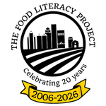
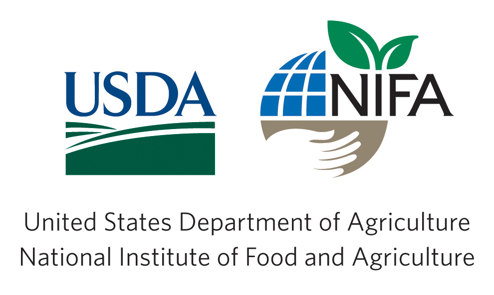
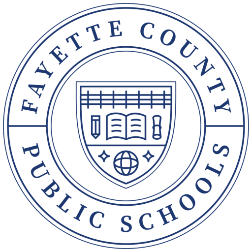

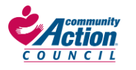
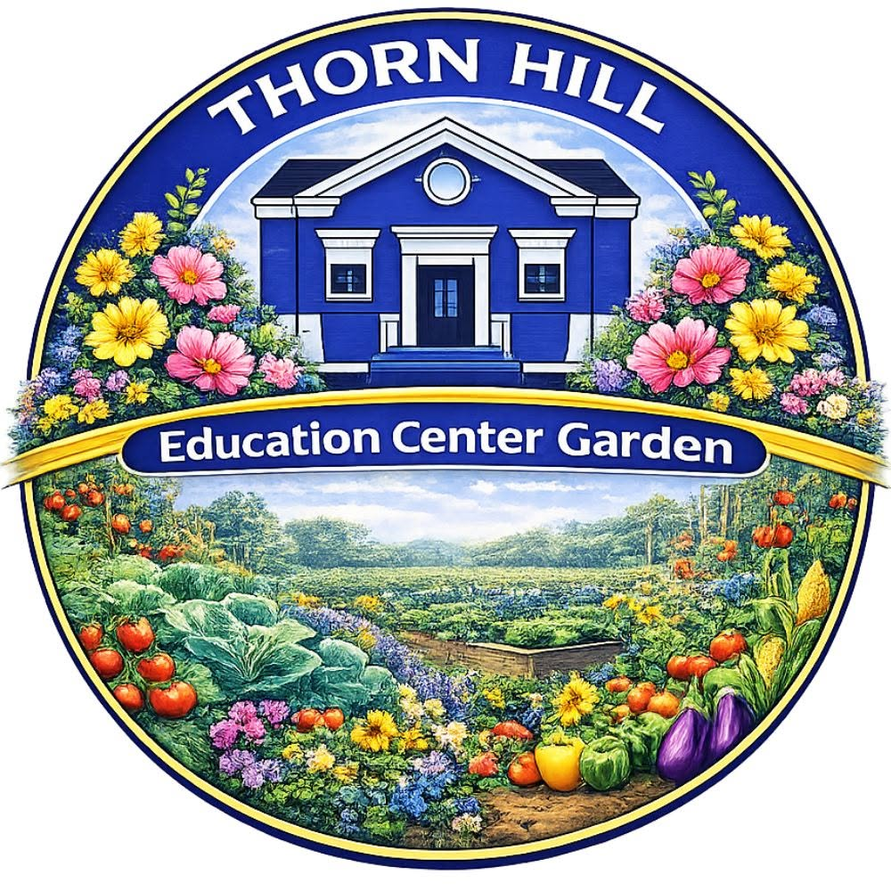
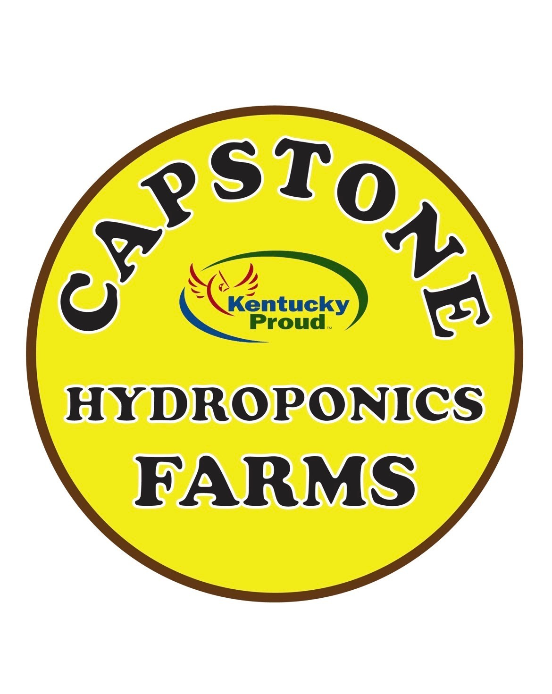
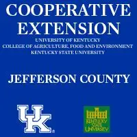
Email: sait.sarr1@kysu.edu
Phone: (502) 597 6911